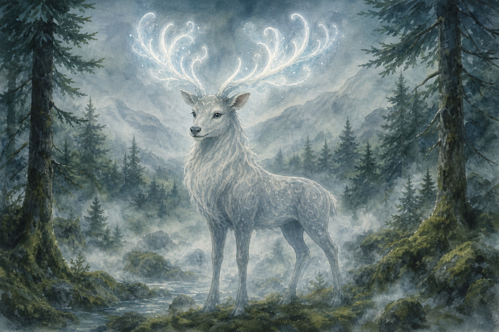
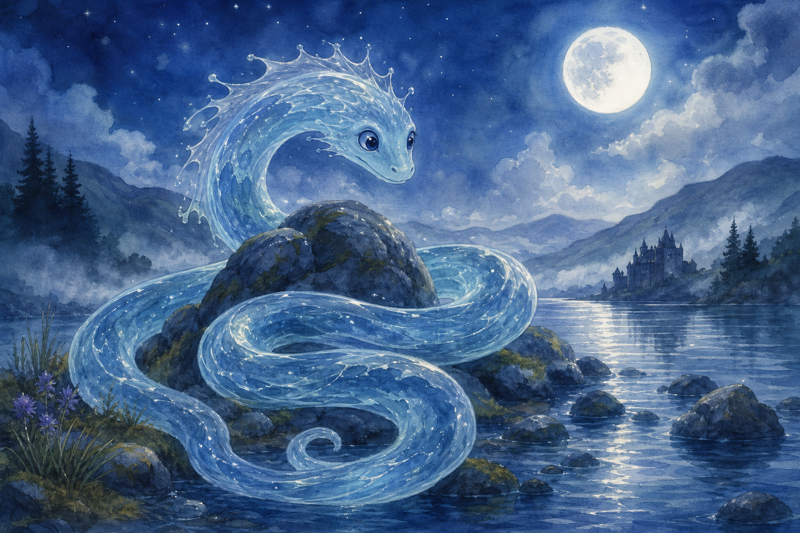
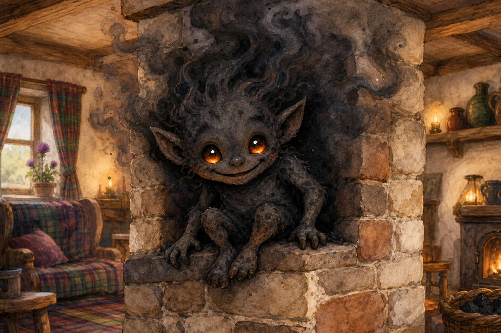
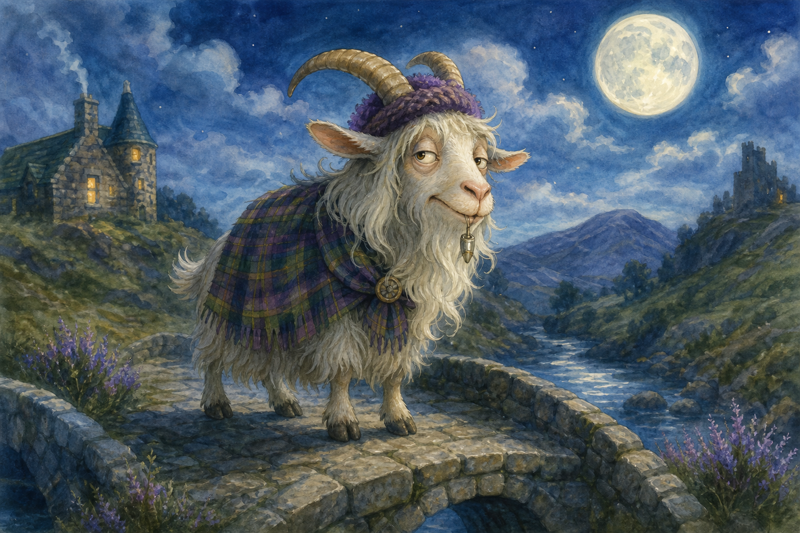
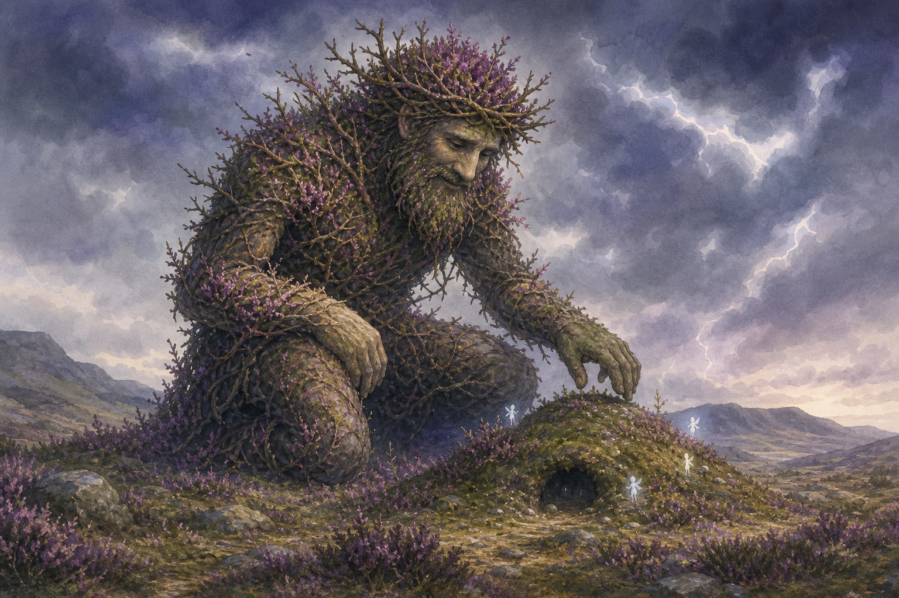
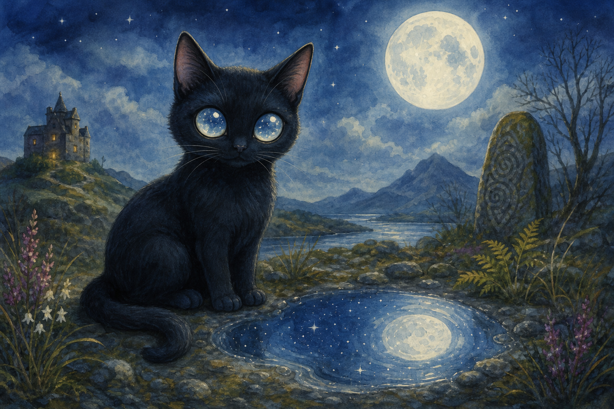
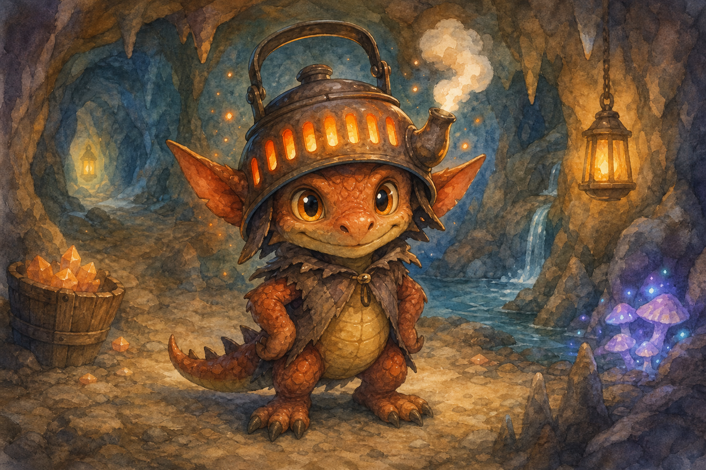
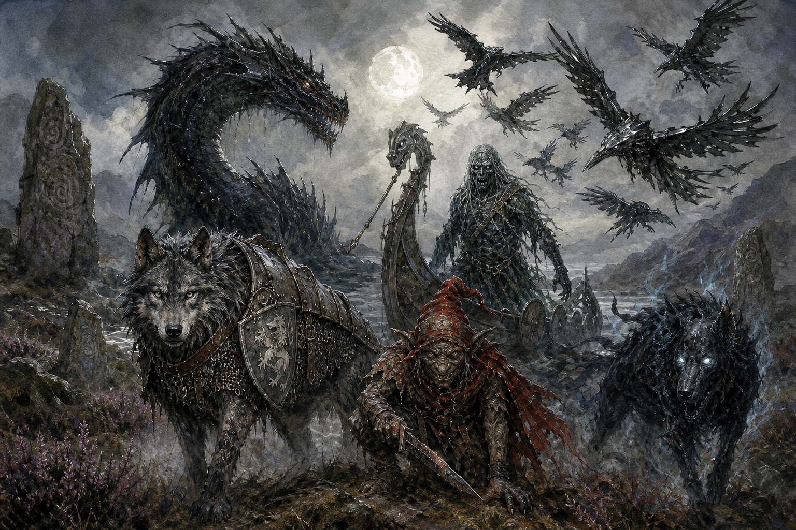
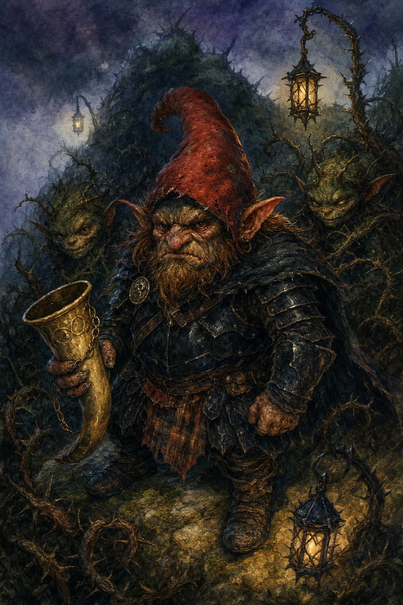
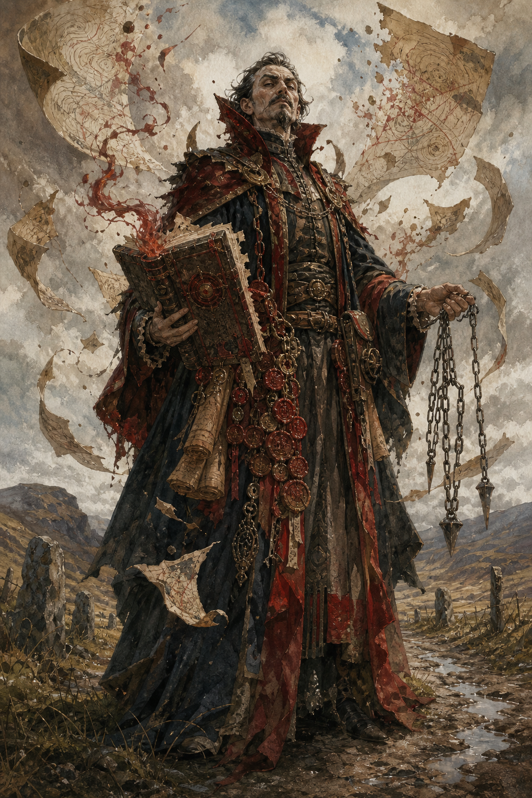

Adventures in Alba
Bestiary Volume 2 — More spooky, magical, adventurer-safe creatures with spells and special attacks

Using scarier creatures safely
Scary, not cruel
- Use shadow, fog, thunder, strange voices, and big feelings.
- Avoid gore, helplessness, or hopeless consequences.
- Give every scary creature a want that can be understood.
Creature pacing
- Round 1: show what is strange.
- Round 2: use a special attack or spell.
- Half HP: reveal the true worry.
- 0 HP: offer help, bargain, nap, or apology.
Special attacks
- Spend MP when the move changes the scene.
- Name the safe result: tangled, sleepy, startled, glittered, lost, or muddy.
- Let clever gear, spells, and kindness reduce danger.
DR guide
| DR | Feeling | Use |
|---|---|---|
| 3 | spooky warm-up | one scene |
| 5 | main trouble | teamwork |
| 7+ | boss wonder | finale only |
Mist Stag of Alba
A tall ghostly stag with antlers full of fog-lights. It appears when someone chooses the wrong path for the right reason.
The Mist Stag is majestic and unsettling, but never cruel. Its hooves make no sound, and its breath shows hidden footprints.
DR formula: round((HP 18 + MP 12 + Level 6×3 + positive stats 10×2) ÷ 10) = 7.
Wants
A lost traveler guided home.
Helps by
Reveals the honest path.
Spells / special attacks
- Antler Lantern (2 MP): lights all hidden tracks.
- Fog Leap: moves anywhere in mist.
- Wrong-Way Charm (1 MP): turns the path unless Wis resists.
Complication
Only follows honest promises.
Gentle approach
Ask what it protects, what it fears, or what promise it needs.
Reward
A path, charm, recipe, clue, or future ally.

Glass Loch Serpent
A translucent serpent of blue loch water and moonlight. It coils around reflections and dislikes loud splashing.
It guards the boundary between real water and mirror water. If treated politely, it lets heroes cross on moon ripples.
DR formula: round((HP 20 + MP 10 + Level 5×3 + positive stats 10×2) ÷ 10) = 6.
Wants
Moonlight returned to the loch.
Helps by
Creates a reflection bridge.
Spells / special attacks
- Mirror Wave (2 MP): swaps two reflections and confuses directions.
- Crystal Coil: wraps a boat without crushing it.
- Moonbite Glimmer (1 MP): 2 HP of cold sparkle trouble.
Complication
Repeats the last words spoken.
Gentle approach
Ask what it protects, what it fears, or what promise it needs.
Reward
A path, charm, recipe, clue, or future ally.

Soot Chimney Imp
A smoky little imp with coal eyes and a grin full of harmless sparks. It steals spoons to make a tiny orchestra.
It lives in chimneys and thinks mess is a language. It can be scary when it pops out, but mostly wants applause.
DR formula: round((HP 10 + MP 7 + Level 3×3 + positive stats 6×2) ÷ 10) = 4.
Wants
An audience for its spoon band.
Helps by
Finds hidden chimney passages.
Spells / special attacks
- Soot Puff (1 MP): makes everyone glitter-black and easy to track.
- Spoon Clatter: startling noise; Wis to stay calm.
- Smoke Slip: escapes through cracks.
Complication
Cannot resist applause.
Gentle approach
Ask what it protects, what it fears, or what promise it needs.
Reward
A path, charm, recipe, clue, or future ally.

Iron-Tooth Granny Goat
A stubborn magical goat with one iron tooth charm and a voice like a creaky gate. She guards bridges from rude travelers.
She is scary because she knows when someone has been impolite. Compliments, oats, or a sincere apology soften her quickly.
DR formula: round((HP 17 + MP 5 + Level 4×3 + positive stats 7×2) ÷ 10) = 5.
Wants
Manners before crossing.
Helps by
Knows every bridge toll and secret step.
Spells / special attacks
- Bridge Stomp: 2 HP of wobbling trouble.
- Iron Chomp (1 MP): bites through rope or bramble, not people.
- Granny Glare: asks for an apology.
Complication
Headbutts unattended baskets.
Gentle approach
Ask what it protects, what it fears, or what promise it needs.
Reward
A path, charm, recipe, clue, or future ally.

Thorn Crown Giant
A kneeling giant made of heather, bark, and thorn branches. It is huge, frightening, and in pain from a crown that grew too tight.
This is a finale creature. Its storm is not anger; it is hurt feelings and tangled magic. Heroes must survive, listen, and remove the crown.
DR formula: round((HP 30 + MP 12 + Level 8×3 + positive stats 7×2) ÷ 10) = 8.
Wants
The thorn crown loosened safely.
Helps by
Protects Alba once healed.
Spells / special attacks
- Storm Stomp (2 MP): everyone chooses dodge, hold, or shelter.
- Thorn Wall (2 MP): divides the map until cut, sung, or soothed.
- Half-HP Phase: the giant whispers the crown hurts.
Complication
Every movement changes the battlefield.
Gentle approach
Ask what it protects, what it fears, or what promise it needs.
Reward
A path, charm, recipe, clue, or future ally.

Moon-Mirror Cat
A black cat whose eyes reflect stars instead of rooms. It steps through puddles and steals secrets only to keep them safe.
The cat is mysterious, not mean. It tests whether adventurers can ask a careful question rather than grab an answer.
DR formula: round((HP 9 + MP 12 + Level 5×3 + positive stats 10×2) ÷ 10) = 6.
Wants
A secret carried kindly.
Helps by
Opens a puddle portal.
Spells / special attacks
- Puddle Door (2 MP): creates a shortcut with a strange price.
- Star-Eye Hint (1 MP): reveals one clue backwards.
- Secret Swipe: steals a clue until politely asked.
Complication
Answers only one-word questions.
Gentle approach
Ask what it protects, what it fears, or what promise it needs.
Reward
A path, charm, recipe, clue, or future ally.

Ember Kettle Kobold
A tiny cave kobold with a glowing kettle helmet. Steam whistles when it gets nervous.
It tends dungeon tea boilers and trap kettles. It looks alarming in the dark, but is mostly afraid someone will waste good tea.
DR formula: round((HP 12 + MP 8 + Level 4×3 + positive stats 6×2) ÷ 10) = 4.
Wants
A perfect cup of cave tea.
Helps by
Disarms hot-steam traps.
Spells / special attacks
- Steam Whistle (1 MP): Startled unless someone laughs.
- Kettle Pop (2 MP): launches harmless sparks for 2 HP trouble.
- Trap-Tap: points out one device if offered tea.
Complication
Corrects everyone's tea manners.
Gentle approach
Ask what it protects, what it fears, or what promise it needs.
Reward
A path, charm, recipe, clue, or future ally.


Redcap Warband Boss
A larger redcap with berry-black armor, a stolen horn, and a gang of bramble sneaks.
It wants to turn fear into power. It is scary, bossy, and beatable by bravery, light, and offering its followers a safer home.
DR formula: round((HP 24 + MP 10 + Level 6×3 + positive stats 9×2) ÷ 10) = 7.
Wants
A dark hill where nobody laughs at it.
Helps by
Can reveal redcap tunnels if defeated fairly.
Spells / special attacks
- War Horn (2 MP): summons bramble minions.
- Jam-Blade Feint: 3 HP trouble but no gore.
- Bramble Ambush (2 MP): Tangled condition.
Complication
Followers abandon it if shown kindness.
Approach
Find the law, oath, collar, true name, or respect that changes the fight.
Reward
Faction clue, battle map, freed ally, or magic item ingredient.

Albion Tax-Mage
A southern Dominion sorcerer with iron measuring chains, red wax seals, and a book that tries to rename Alba.
Tax-mages are dangerous because they erase local names. Break their ink, chain, or authority and their spell collapses.
DR formula: round((HP 18 + MP 18 + Level 7×3 + positive stats 6×2) ÷ 10) = 7.
Wants
Names, maps, taxes, and obedience.
Helps by
Knows secret Redcloak plans if captured or convinced.
Spells / special attacks
- Rename Hill (3 MP): fairy path closes until true name spoken.
- Iron Chain Map (2 MP): blocks travel routes.
- Red Wax Seal (1 MP): locks chest, gate, or mouth.
Complication
Cannot control a place whose true name is sung by locals.
Approach
Find the law, oath, collar, true name, or respect that changes the fight.
Reward
Faction clue, battle map, freed ally, or magic item ingredient.

Barbarian Storm-Berserker
A northern clan champion painted with storm spirals, fierce but bound by honor and guest-right.
Outsiders call them barbarians; they call themselves the Storm-Clans. They are not monsters, but can be fearsome enemies if insulted.
DR formula: round((HP 26 + MP 8 + Level 7×3 + positive stats 8×2) ÷ 10) = 7.
Wants
A fair challenge and respect for clan law.
Helps by
Can become a mighty ally against Albion.
Spells / special attacks
- Storm Roar (2 MP): Startled unless answered bravely.
- Axe-Flat Knockdown: 3 HP trouble; no gore.
- Honor Challenge: one hero may duel with non-lethal stakes.
Complication
Must obey guest-right and cannot refuse a truthful poem.
Approach
Find the law, oath, collar, true name, or respect that changes the fight.
Reward
Faction clue, battle map, freed ally, or magic item ingredient.